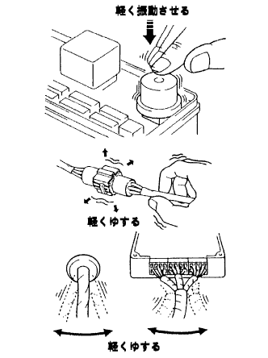
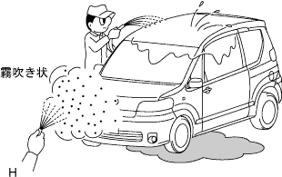

ECU制御システムのトラブルシューティングの方法 不具合現象のシミュレーション方法 |
|  |
部品とセンサー
推定原因系の部品に手で軽く叩くなどの振動を与え、不具合の発生がないか点検する。
コネクター
コネクターを軽く上下、左右にゆする。
ワイヤハーネス
ワイヤハーネスを軽く上下、左右にゆすり、不具合の発生がないか点検する。(特にワイヤハーネスではコネクターの付け根、振動の支点、ボデーの貫通部を重点的にチェックする。)
|
ヘアドライヤー、冷却剤を用いて、推定不具合系の部品を加熱または冷却し、不具合の発生がないか点検する。
|  |
車両に水をかけ不具合の発生がないか点検する。
ヒータブロワ、ヘッドランプ、リヤデフォッガなどの電気部品を作動させて電気的負荷をあげ、不具合の発生がないか点検する。